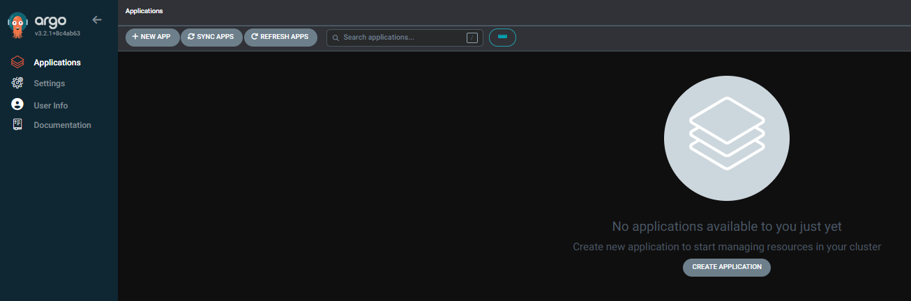

ArgoCD
Authenticate
Create and set a namespace for ArgoCD:
Create a kubernetes secret from your github ssh key (don't do this for prod  ).
).
Update the path to your private github ssh key, and the name of your personal github.
kubectl create secret generic github-ssh \
--namespace argocd \
--from-file=sshPrivateKey=/home/gr0ot/.ssh/id_ed25519 \
--from-literal=type=git \
--from-literal=url=git@github.com:nicholls-c
Label the secret for Argo:
Install
- Install ArgoCD CRDs:
- Verify installation:
kubectl -n argocd get statefulset
Use
If you now forward the Argo service, you should get the UI rendering (you should also be able to click through Settings > Repository and see your personal org).
To sign in to the UI, username is admin:

The initial password can be retrieved using the following command:
kubectl -n argocd get secret argocd-initial-admin-secret -o jsonpath="{.data.password}" | base64 -d; echo
Which should lead you to the default UI. 
If you have installed the Argo CLI, you can also authenticate that: